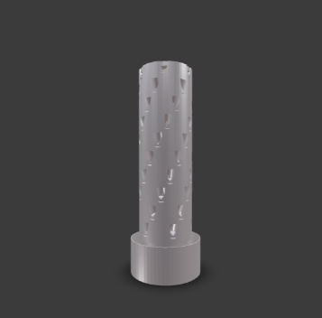
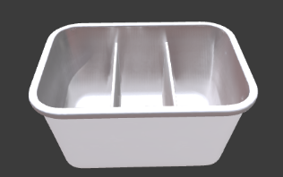
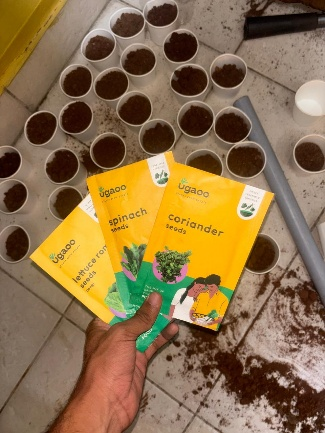
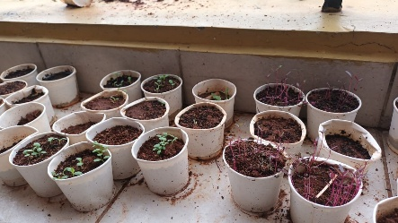
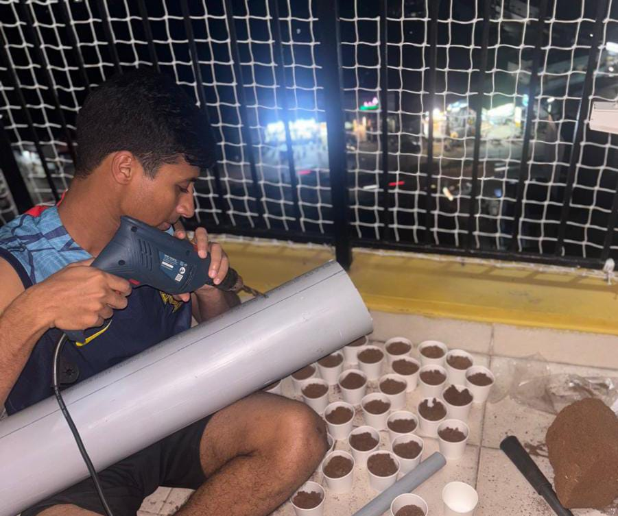
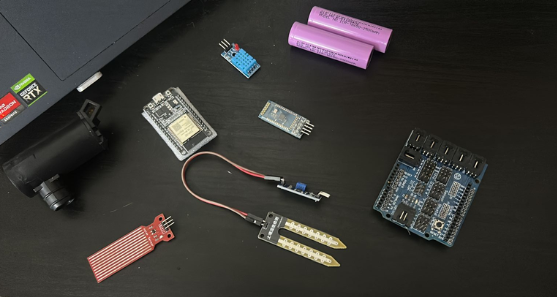
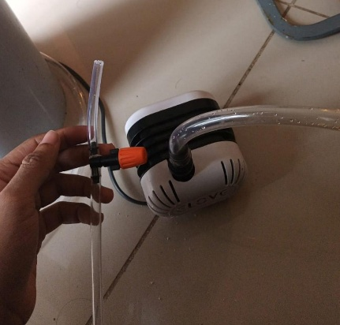
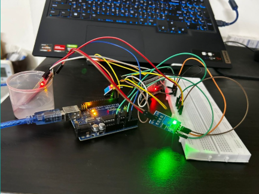
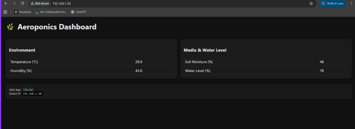

Tower Fabrication
The growing tower was fabricated from a large-diameter PVC pipe, with plant ports cut using a hand saw and heat-formed smaller PVC pipes press-fitted and bonded into each opening. Seedlings were germinated separately and transplanted into the tower once root development was sufficient.
At the core of the tower runs a vertical PVC manifold lined with fine misting nozzles at multiple nodes. A submersible DC pump draws nutrient solution ” water dosed with NPK compound ” from a base reservoir and pressurises the nozzle array, delivering a fine aerosol directly to the suspended root zone. Drainage returns to the reservoir in a closed loop.


CAD Model (Vertical Tower) & Reservoir.



Sensing, Control & Remote Monitoring



An ESP32 microcontroller manages the system end-to-end ” reading data from a DHT11 temperature/humidity sensor, a moisture probe, a water level sensor, and an EC sensor that tracks nutrient concentration in the reservoir. A relay module handles pump switching, with timed misting cycles and sensor-based overrides to prevent over-saturation or dry-running.

Sensor telemetry is streamed live to a web dashboard over Wi-Fi, enabling remote monitoring of all system parameters.


Team Members: Nikhil Mohan, Abhinav Shaji Kumar, Nekha Sudheer.